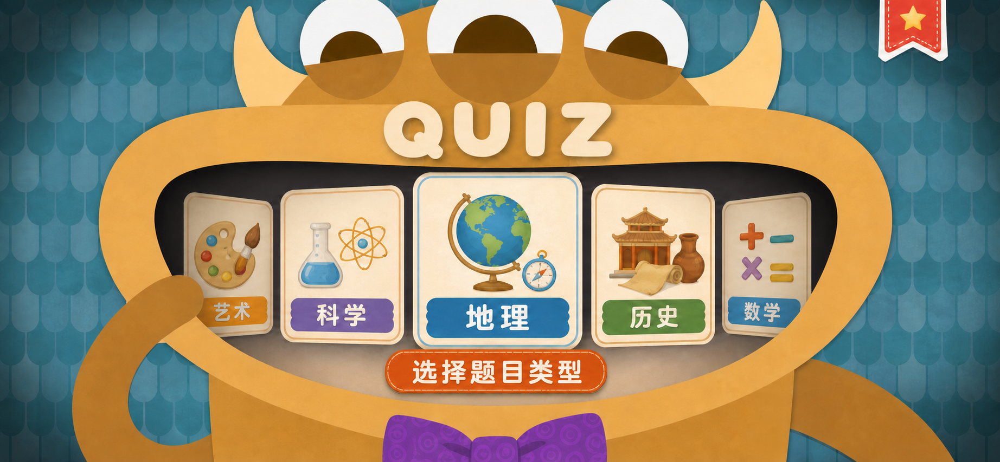
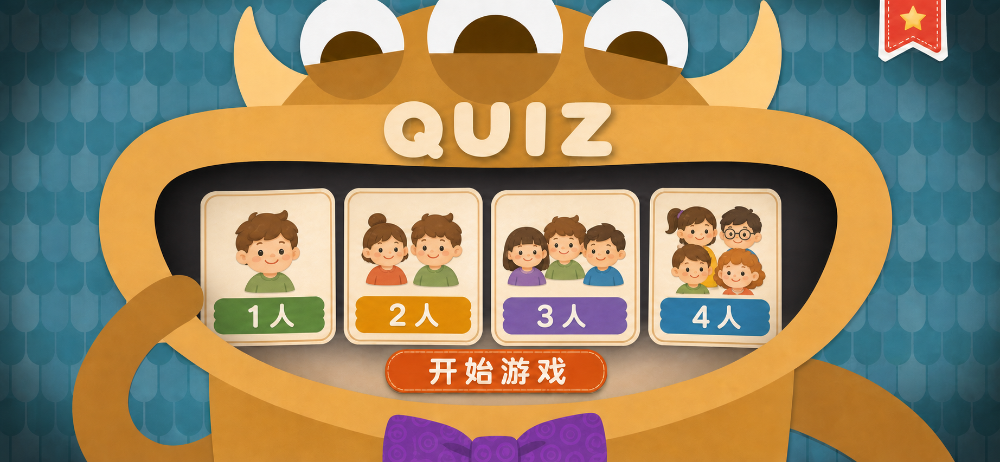
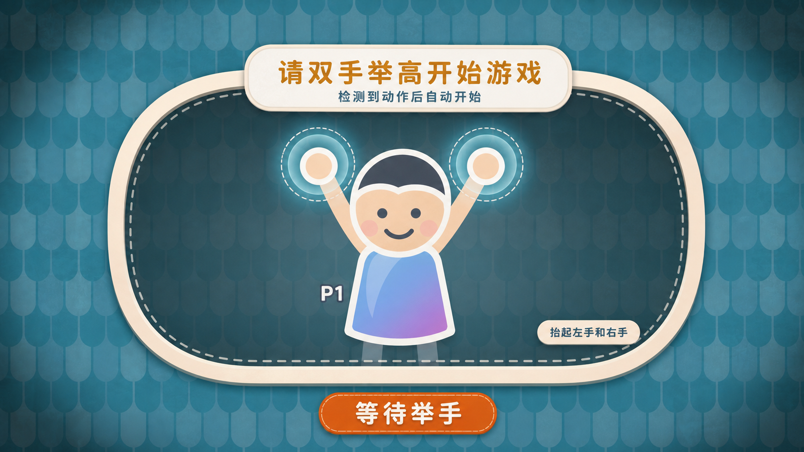
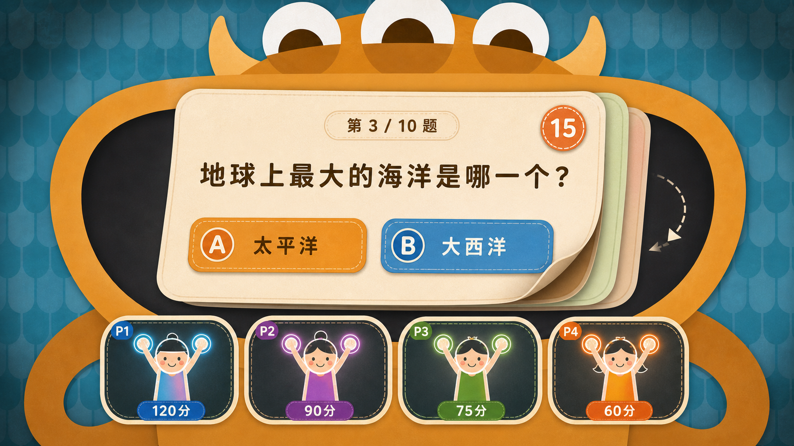
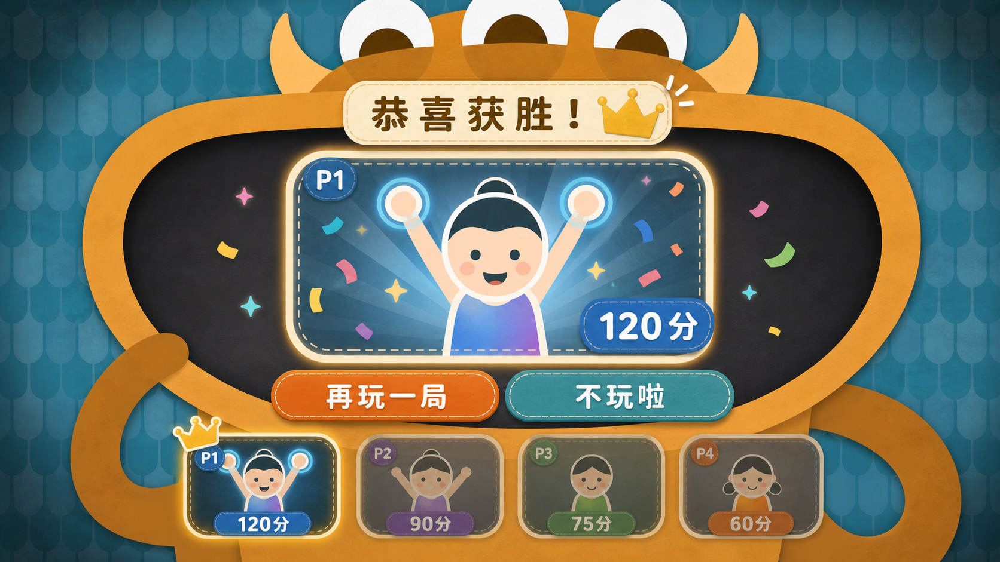

AGENT.html · quiz-dash interface brief
QUIZDASH 体感版界面改进
这是一款体感操控类问答游戏。本文档定义现有 game/quiz-dash 的界面升级方向：
保留已有题库、玩家、相机、体感判定和计分逻辑，把当前偏科技感的 UI 改造成纸片拼贴风格的
儿童教育游戏界面。
核心原则：视觉必须围绕 teal 鳞片纹理背景、暖橙怪物嘴框、奶油纸卡、虚线缝线、柔和投影和轻微暗角展开。
不继续使用霓虹赛博风、说明型落地页、右下角聊天浮标或与体感游戏无关的装饰控件。
视觉系统
界面应像一套可互动的纸片舞台。怪物嘴巴是主要内容容器，嘴唇上承载品牌文字， 嘴内展示选择卡、翻题卡、玩家视频或结算结果。所有文字必须清晰可读，中文按钮要保持大字号和高对比。
背景 teal#176c7b
嘴内深色#0d3841
怪物橙金#d69625
主按钮橙#e97819
选项蓝#1d8fc1
纸卡奶油#f8e4bf
- 背景：青绿色鳞片或瓦片重复纹理，带纸张颗粒、边缘暗角和局部柔光。
- 主体：暖橙色怪物外框，三只大眼睛、圆角大嘴、厚重纸片阴影；紫色领结可作为底部识别元素。
- 卡片：奶油色厚边框、圆角、虚线缝线、轻微弯曲或翻页厚度，按钮使用橙、蓝、绿、紫做区分。
- 动效方向：卡片切换用翻牌、翻页或纸张滑动；体感准备状态用双手发光圆环、虚线检测区和状态按钮。
核心流程
以现有 React phase 为基础，推荐流程如下。每个阶段都应能通过键鼠调试，也应能接入体感选择。
题目类型选择
玩家人数选择
举手检测开始
翻卡答题
公布答案与计分
结算与再玩
界面图定义
以下图片是本次 QUIZDASH 体感版 UI 的视觉目标。实现时应优先复刻这些图的构图、材质、光影和信息层级， 再按真实数据替换文字、玩家数、题目和分数。

QUIZ；嘴巴中间是横向题型卡片组，一张卡片一种题型，卡片包含图标和中文题型名。
下方橙色缝线按钮文字为 选择题目类型。可支持左右滑动或体感左右切换，当前卡片居中放大。

1 人 到 4 人。每张卡片用儿童头像数量表达玩家数，
下方按钮为 开始游戏。选择 4 人时后续相机区域展示四个玩家槽位。

请双手举高开始游戏，副标题提示检测到动作后自动开始，底部状态为 等待举手。
检测到玩家双手举高后进入正式答题。

第 3 / 10 题，右上角是 15 秒计时器，左右有翻页箭头或翻卡暗示。
下方固定四个玩家镜头卡，显示 P1 到 P4 和实时分数。

恭喜获胜！、皇冠、玩家编号和分数。
下方两个大按钮分别是 再玩一局 和 不玩啦。底部保留四个玩家分数摘要，赢家高亮，其余玩家弱化。
交互约定
体感启动
在准备阶段检测所有已选玩家，双手高于肩部并保持短暂稳定后自动开始。
选项数量
正式答题界面只显示 A/B 两个选项，避免体感场景中目标过多。
多人镜头
玩家数为 1 到 4；四人场景下下方显示四个等宽摄像头槽位和分数。
可访问调试
鼠标点击仍可模拟选择，便于开发和无摄像头环境测试。
- 每道题切换时使用翻牌或纸张翻页动画；不要使用硬切或科技感扫描动效。
- 回答动作可以映射为左手选择 A、右手选择 B，或沿用现有
mocapMotion.js的选择抽象。 - 计时结束自动进入 reveal 或下一题；结算时取分数最高玩家作为赢家视频主展示。
- 所有动作状态应在镜头卡或状态按钮中反馈，不额外增加教学长文案。
实现映射
这是已有 quiz-dash 的界面改进，优先替换布局和样式，尽量复用现有状态、题库和相机组件。
| 文件 | 建议职责 |
|---|---|
src/App.jsx |
保留 phase 流程；把 category、count、setup、playing、results 的 JSX 改造成本文档对应屏幕。 |
src/styles.css |
建立纸片怪物舞台、teal 背景纹理、卡片、翻题、玩家镜头、结算按钮等视觉系统。 |
src/components/MultiPlayerCamera.jsx |
继续提供玩家检测和镜头画面；必要时开放更适合四个玩家小卡的展示状态。 |
src/shared/mocapMotion.js |
维护体感判定，支持双手举高开始和 A/B 选择手势。 |
src/questions.js |
题目数据应能提供两选项模式；若现有题库为四选项，界面层只展示当前题的两个有效选项。 |
实施优先级
- 先搭建可复用舞台容器：teal 背景、怪物嘴框、纸卡、按钮和玩家镜头槽。
- 重做题目类型和玩家数选择，让视觉基调完整落地。
- 接入举手开始引导，保证体感游戏的第一步清晰。
- 把正式答题改为两选项翻卡界面，并保留四玩家实时分数。
- 最后完成赢家视频结算、再玩一局和不玩啦的完整闭环。